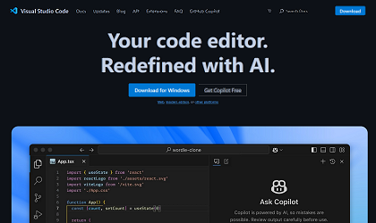

Exercises
All the exercises for the various Tutorials with finished sample web pages are listed here.
All the projects for the various Tutorials with finished sample web pages are listed here.
Google Classroom
The Google Classroom for the course beginning February 17th is here.
Setting Up

Working with Web Browsers
Installing and customising the two web browsers popular with web designers and web developers.
View Tutorial
Web Hosting on GitHub
Creating a free GitHub account, choosing a username and setting up a repository for hosting your web pages.
View Tutorial

Working with VS Code
Installing and customising Microsoft Visual Studio Code for creating web pages (HTML files) and stylesheets (CSS files).
View Tutorial